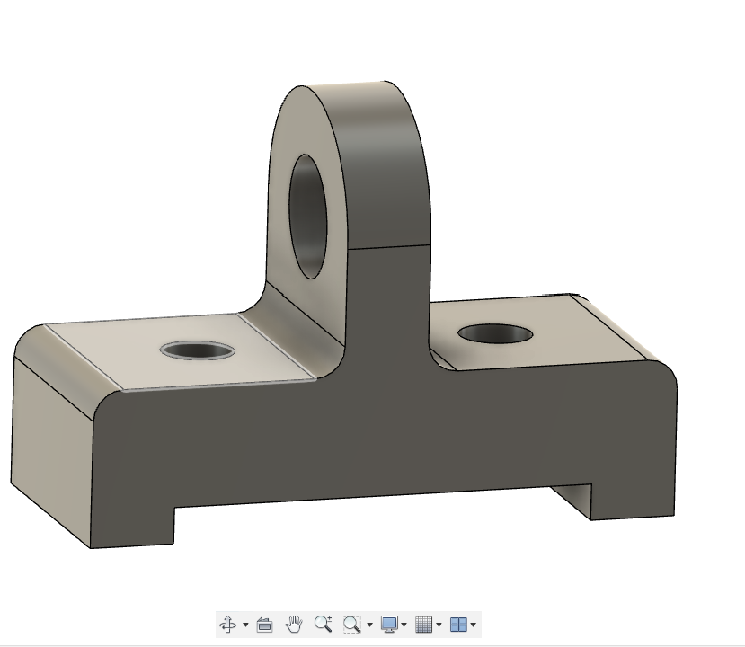
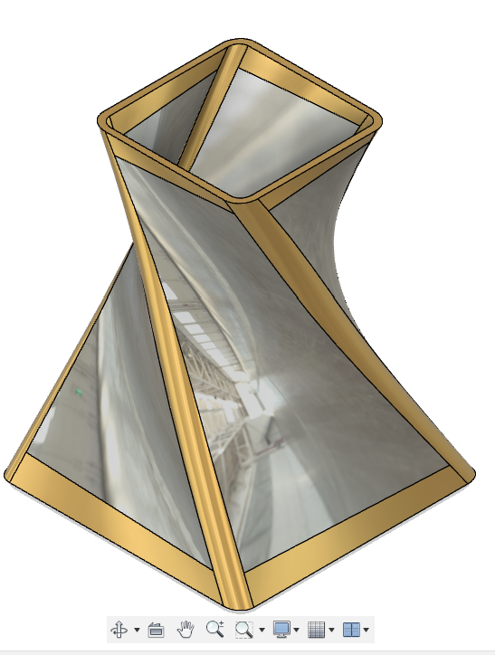
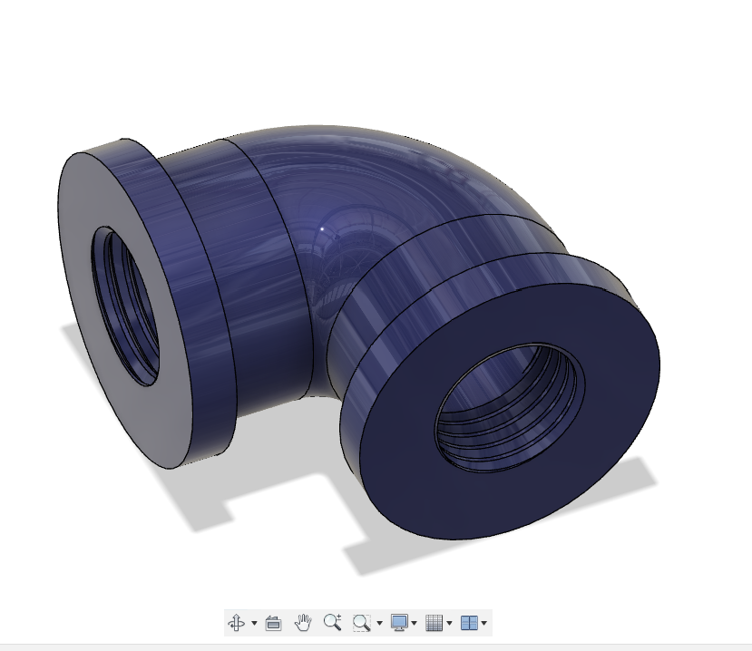

ABOUT fusion 360
Fusion 360 is a powerful 3D CAD, CAM, and CAE software developed by Autodesk. It's widely used in engineering, product design, and manufacturing industries for designing, simulating, and fabricating products. It offers features like parametric modeling, assembly modeling, simulation, rendering, and collaboration tools, making it versatile for various design needs. My journey into the fascinating world of 3D design began with an introduction to Autodesk's Fusion 360 software. This powerful tool, renowned for its versatility and user-friendly interface, opened up a realm of possibilities for creating intricate 3D models. After creating an account on Fusion 360, I accessed the software using my college's ID card, granting me access to an educational license. As I delved deeper into Fusion 360, I was captivated by its capabilities, from creating simple geometric shapes to designing complex mechanical parts. The software's intuitive design and extensive feature set allowed me to unleash my creativity and bring my ideas to life in the digital realm. One of the most exciting aspects of learning Fusion 360 was the ability to visualize and iterate on my designs in real-time. The software's parametric modeling capabilities enabled me to make precise adjustments to my models, ensuring they met the desired specifications. The model I created at the first day of learning, using fusion 360:
DAY1
OPEN SHEET
OPEN SHEET
DAY2
On the SECOND day of my Fusion 360 journey, I immersed myself in the intricacies of 3D modeling, delving into the advanced features of the software. I honed my skills in extruding and learned to manipulate 3D objects with precision and finesse. With each exploration, I gained a deeper understanding of the tools and techniques at my disposal, and I felt myself improving with every minute of practice. I explored various methods of extrusion, including extruding along paths and creating complex shapes by extruding multiple faces simultaneously. These techniques allowed me to create intricate and detailed 3D models, pushing the boundaries of my creativity and technical skills.I make a creative and decorative flower stand by using fusion 360.as my own experience in fusion I USE LOFT command for this module .
OPEN SHEET
As I delved deeper into 3D modeling, I was on the verge of working on complex 3D models that would challenge my newfound skills and expand my capabilities. I felt a sense of excitement and accomplishment as I realized how far I had come in just a few days of learning. Overall, the third day of learning Fusion 360 was a transformative experience, as I mastered the art of 3D modeling and prepared to tackle more complex projects in the future. I look forward to applying my newfound skills to create innovative and visually stunning designs that push the boundaries of what is possible with Fusion 360.BY exploring fusion 360 I make a simple pipe bend.
OPEN SHEET
DAY3
From day THREE until the submission deadline, I dedicated myself to working on three complex designs using Fusion 360. The first design was a PISTON,IT IS critical component in engines that converts linear motion into rotational motion. This project pushed me to explore advanced features of Fusion 360, such as assemblies and joints, to simulate the complex movements of a crankshaft assembly accurately This project challenged me to apply my knowledge of extrusion and 3D modeling to create a functional and realistic representation of a PISTON.
DAY4
Assignment 2
SHEET OF KNUCKLE JOINT
DAY5
Assignment 3
SHEET OF DRONE
Fusion 360 is a comprehensive computer-aided design (CAD), computer-aided engineering (CAE), and computer-aided manufacturing (CAM) software developed by Autodesk. It offers a robust suite of tools for 3D modeling, simulation, rendering, and collaboration, making it a popular choice among engineers, designers, and manufacturers. At the core of Fusion 360 is its parametric modeling environment, which allows users to create 3D models by defining parameters and relationships between various features. This parametric approach enables design iterations and modifications to be made quickly and easily, ensuring flexibility and adaptability throughout the design process. One of the fundamental tools in Fusion 360 is sketching, which provides users with the ability to create 2D profiles that can be extruded, revolved, or swept to form 3D geometry. Sketches serve as the building blocks for creating complex models, allowing users to define shapes and features with precision. In addition to sketch-based modeling, Fusion 360 offers a range of other modeling techniques, including direct modeling, surface modeling, and sculpting. Direct modeling allows users to manipulate geometry without the constraints of parametric relationships, making it ideal for making quick edits or working with imported geometry. Surface modeling enables the creation of complex organic shapes, while sculpting provides intuitive tools for creating freeform designs. Assembly modeling is another key feature of Fusion 360, allowing users to assemble multiple components into a single design and simulate their interactions. This enables engineers to evaluate how different parts fit together and identify any potential issues before moving to production. Simulation capabilities in Fusion 360 enable users to analyze the structural, thermal, and fluid flow behavior of their designs, helping to optimize performance and durability. By simulating real-world conditions, engineers can identify areas for improvement and make informed design decisions. Once a design is finalized, Fusion 360 offers powerful rendering tools for creating photorealistic images and animations. This allows designers to showcase their concepts and communicate their ideas effectively to stakeholders and clients. On the manufacturing side, Fusion 360 includes CAM functionality for generating toolpaths for CNC machining, turning, and additive manufacturing processes. This integration streamlines the transition from design to production, enabling users to seamlessly move from virtual prototypes to physical prototypes and final products. One of the unique aspects of Fusion 360 is its cloud-based collaboration capabilities. With built-in version control, real-time collaboration, and cloud storage, teams can work together on projects regardless of their location. This promotes collaboration and ensures that everyone has access to the latest version of the design. In summary, Fusion 360 is a versatile and powerful software suite that offers a wide range of tools for 3D modeling, simulation, rendering, and collaboration. Whether you're an engineer, designer, or manufacturer, Fusion 360 provides the tools you need to bring your ideas to life efficiently and effectively.